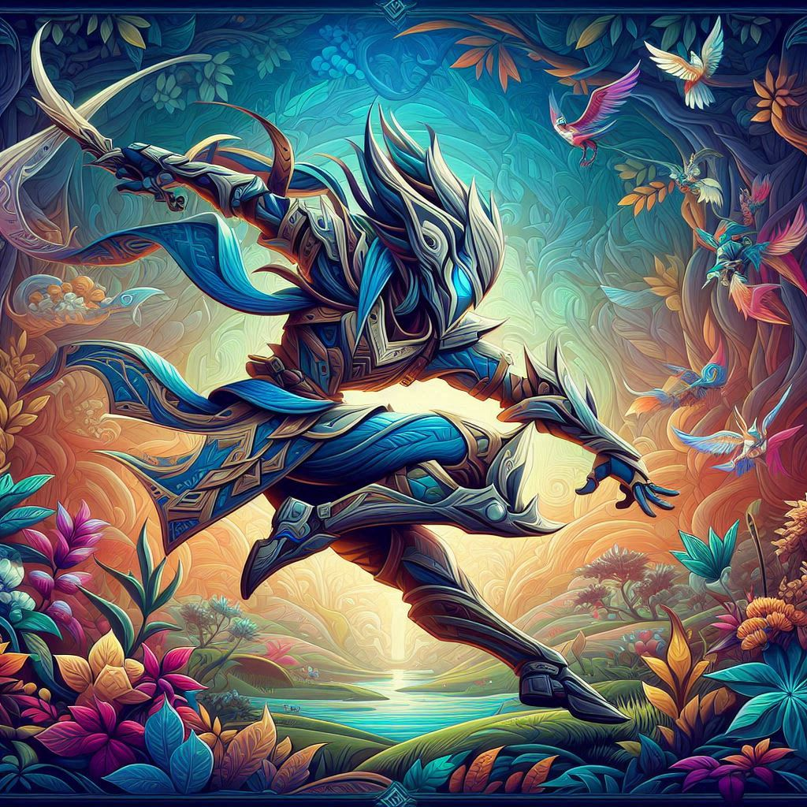
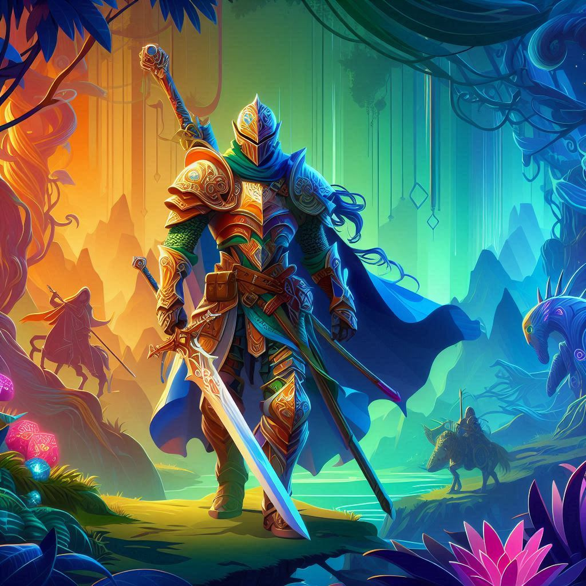
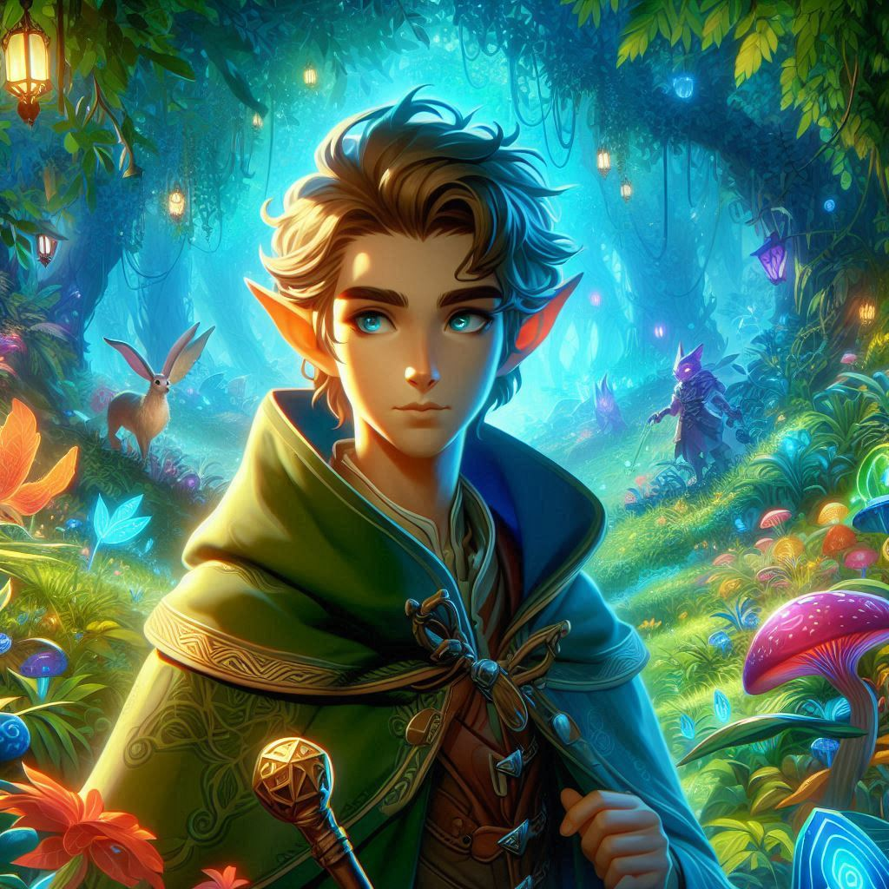

the Strength stat represents a character's physical power and ability to exert force. A higher Strength score means your character is stronger and more capable in physical tasks It's crucial for characters who rely on brute strength, like fighters, barbarians, and paladins.
Dexterity represents a character's agility, reflexes, and balance. Dexterity is the cornerstone of stealthy or nimble characters. It's vital for characters who rely on finesse, speed, or ranged combat—like rogues, rangers, and monks.
Constitution represents a character's physical resilience, endurance, and overall health. Constitution is universally important because everyone benefits from staying alive longer. It's crucial for characters who need to withstand damage or survive tough conditions—such as barbarians, clerics, and druids
Intelligence represents a character's mental acuity, analytical ability, and depth of knowledge. A high Intelligence score reflects a character's sharp mind and expertise in academic or magical fields. It's particularly important for classes like wizards and artificers, which rely on Intelligence for spellcasting.
Wisdom represents a character's intuition, perceptiveness, and connection to the world around them. Characters with high Wisdom often excel at noticing details, understanding others, and connecting with the natural or spiritual world. It plays a key role in many situations that require awareness or spiritual insight. Wisdom is especially crucial for classes like clerics, druids, and rangers.
Charisma represents a character's charm, confidence, and ability to influence others. High Charisma reflects a magnetic and confident presence. It's a vital stat for characters who rely on persuasion, social interactions, or sheer force of personality—such as bards, sorcerers, paladins, and warlocks.